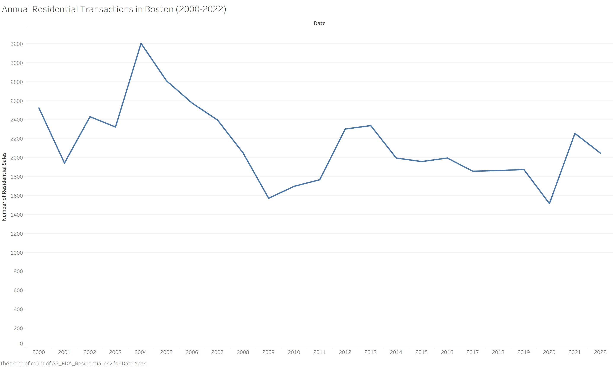
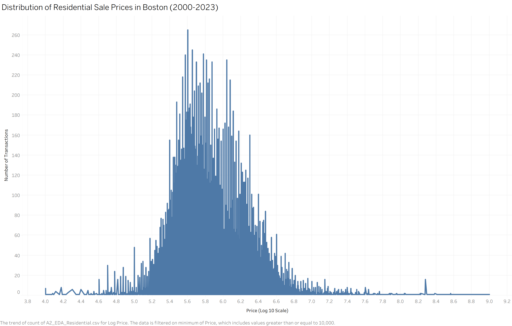
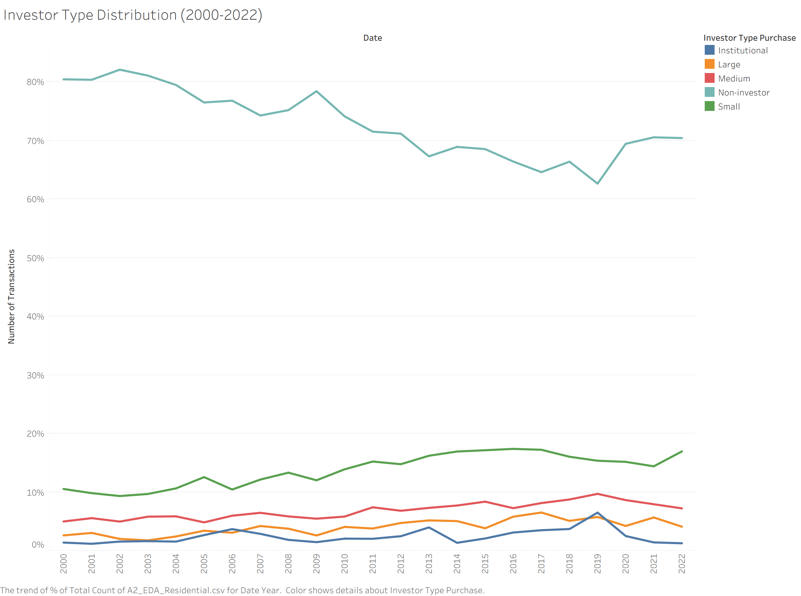
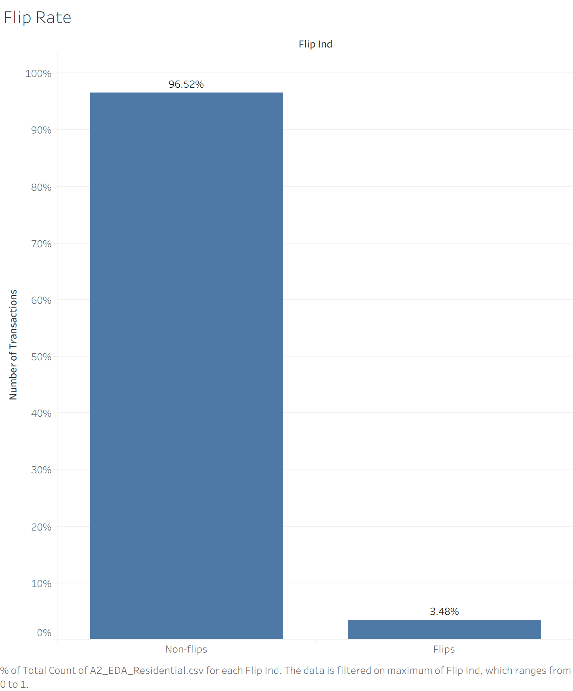
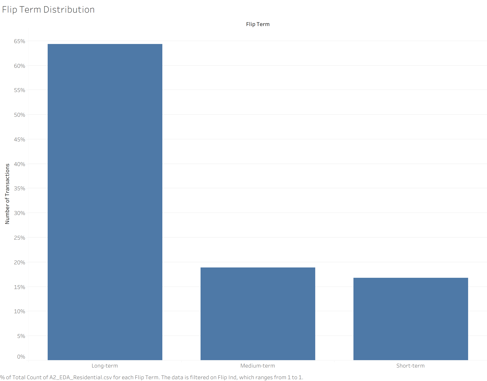
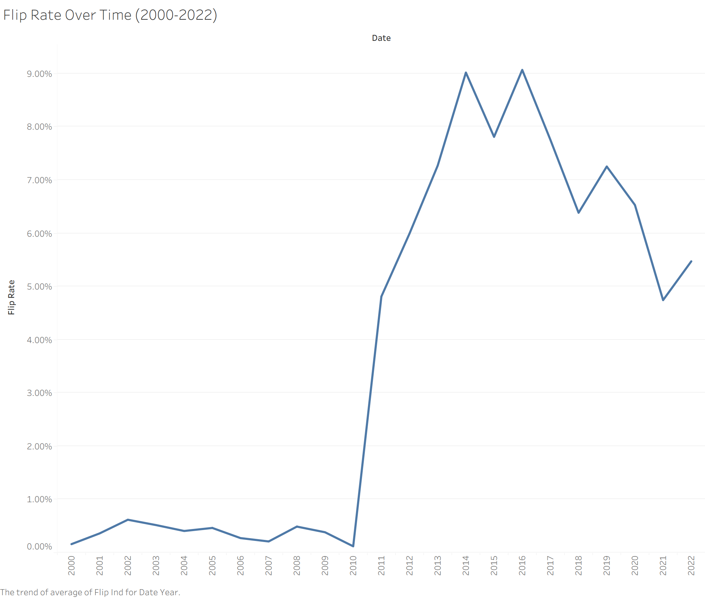
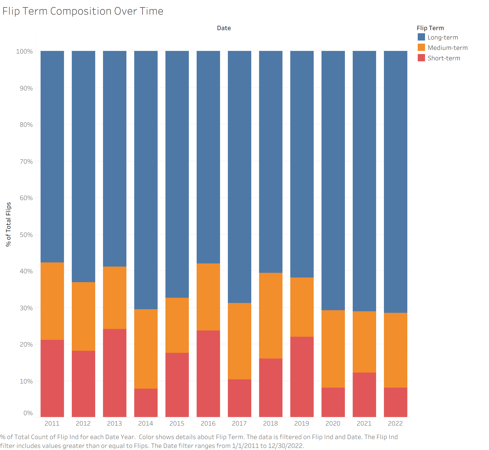
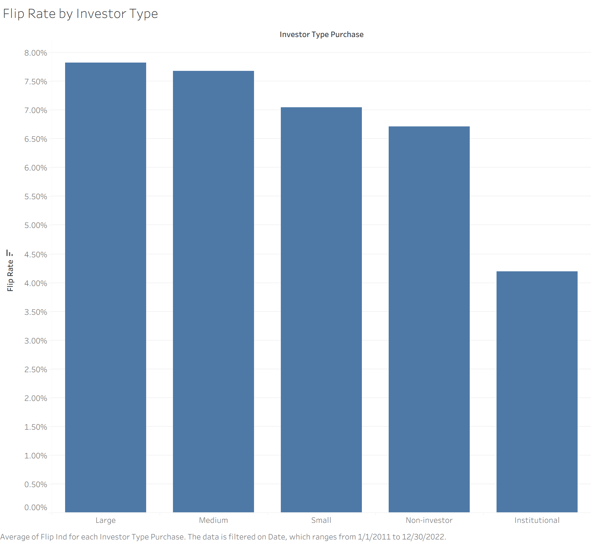
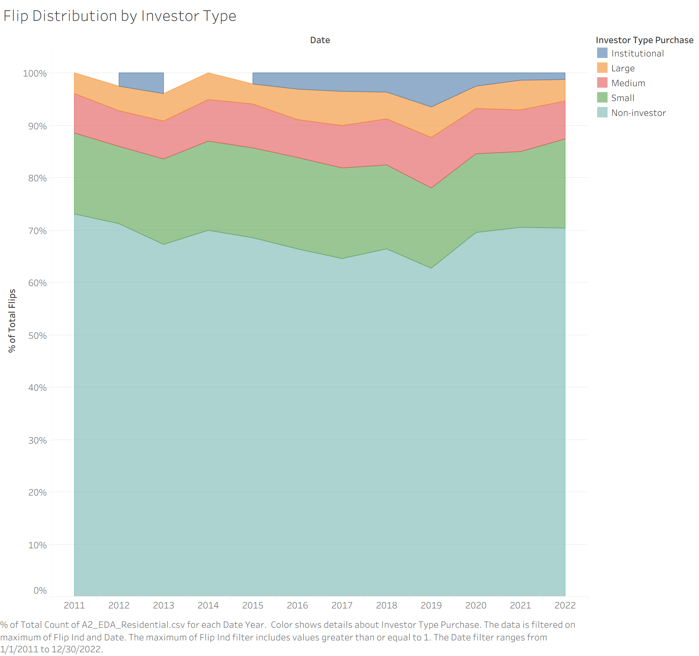

Subtheme: Speculation
Overall Analysis Questions
My interest in speculative activity in housing markets was initially sparked by reporting on the growing role of investors in residential real estate. In particular, a ProPublica article highlighted how corporate and investor purchases have expanded across many U.S. housing markets, raising concerns about affordability and the availability of homes for typical buyers.
At the same time, this phenomenon is personally striking to me because it contrasts sharply with my own experience growing up in Burundi, where homeownership is overwhelmingly dominated by non-investors and the idea of homes being frequently bought and resold for profit is relatively uncommon.
Seeing how prominent this form of investment has become in cities like Boston made me curious to understand how widespread speculative activity actually is, who participates in it, and where it tends to occur within the housing market. This analysis explores the following questions using residential transaction data for Boston between 2000 and 2023:
- How has short-term speculative flipping activity evolved in Boston from 2000 to 2023?
- Which types of investors are driving speculative activity in Boston’s housing market?
- Is speculative activity concentrated in particular neighborhoods or segments of the Boston housing market?
Dataset Overview





Analysis Questions
Question 1: How has short-term speculative flipping activity evolved in Boston from 2000 to 2023?


Question 2: Are investors more likely to flip properties than non-investors?


Question 3: Is speculative activity concentrated in particular neighborhoods or segments of the Boston housing market?


Summary
This analysis explored how speculative resale activity has evolved in Boston’s housing market over the past two decades and which types of buyers appear most involved. Several key patterns emerge from the data.
First, overall market activity reflects major economic cycles. Residential transaction volume expanded in the early 2000s before declining sharply during the 2008 financial crisis. Although activity recovered in the following decade, total transaction levels never returned to their mid-2000s peak. A similar though shorter disruption appears during the COVID-19 pandemic in 2020.
Second, the composition of buyers has shifted over time. The share of purchases made by non-investors declined through the 2010s, while participation by small and medium investors gradually increased. Although institutional investors receive considerable public attention, they remain a relatively small portion of total transactions in this dataset. This finding was somewhat surprising, as it seems to run counter to the common narrative of large corporate investors dominating residential real estate markets. One possible explanation is that institutional investor activity may occur through less visible channels, such as partnerships or other entities that do not clearly identify as institutional buyers in the data. This possibility was suggested in the talk given by MAPC representatives earlier this week.
Third, flipping activity itself increased noticeably beginning in the early 2010s. While flipped transactions still represent a small share of the overall market—around 5–9% in recent years—the increase marks a clear change compared with the early 2000s, when flipping was almost nonexistent. Most flips occur with holding periods between 12 and 24 months, suggesting that many investors hold properties long enough to renovate or otherwise reposition them before resale.
Finally, speculative activity appears unevenly distributed across both buyer types and geographic areas. Investors flip properties somewhat more often than non-investors, though non-investors still account for the majority of flipped transactions because they represent most home purchases overall. At the neighborhood level, flip rates and cash purchase rates vary across ZIP codes, indicating that speculative activity may be concentrated in particular segments of the housing market.
Taken together, these patterns suggest that while speculative resale remains a relatively small share of Boston’s housing market, its presence increased significantly during the 2010s and appears unevenly distributed across buyers and locations. Understanding how these patterns interact with housing affordability and neighborhood change remains an important question for future research.